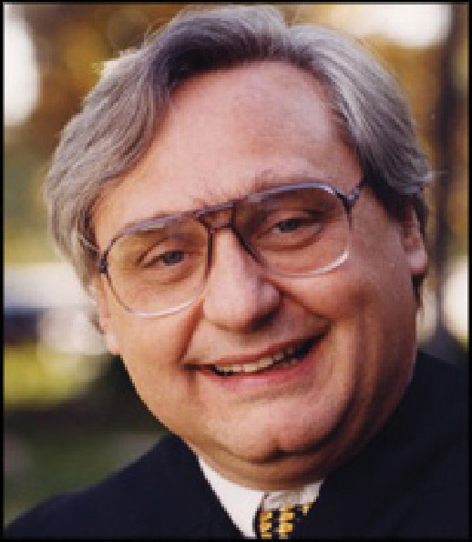

The framers of the Constitution recognized the value of intellectual property (IP) by drafting the Copyright Clause into Article I, Section 8 as part of Congress’s duty to pass laws. As IP law evolved, laws that govern trade secrets, patents, trademarks, and copyright have emerged to protect different forms of IP. These legal protections provide a solid foundation for businesses, entrepreneurs, and artists to create useful, innovative, and inspiring works for society. Our lives are enriched by machines to make tasks easier, medicines to heal us, and songs and movies to inspire and entertain us. Without the financial incentives provided by IP law, innovation would grind to a halt and the U.S. economy would become unrecognizable.
On the other hand, the Constitution is explicit about the primary purpose of providing IP monopolies: to advance the progress of science and useful arts. This advance can take place when IP owners create IP, but it can also take place when the IP falls into the public domain at the end of its “limited time.” Many legal scholars now believe that Congress has gone too far in pleasing copyright holders, mainly large corporations with billions of dollars in profits at stake. In a case discussed in Chapter 7 "Torts" involving Samsung’s use of a robot that looked like Vanna White, Judge Alex Kozinski from the Ninth Circuit Court of Appeals (Figure 9.15 "Judge Alex Kozinski") noted that sometimes the law does go too far in protecting IP:
Something very dangerous is going on here. Private property, including intellectual property, is essential to our way of life. It provides an incentive for investment and innovation; it stimulates the flourishing of our culture; it protects the moral entitlements of people to the fruits of their labors. But reducing too much to private property can be bad medicine. Private land, for instance, is far more useful if separated from other private land by public streets, roads and highways. Public parks, utility rights-of-way and sewers reduce the amount of land in private hands, but vastly enhance the value of the property that remains.
So too it is with intellectual property. Overprotecting intellectual property is as harmful as underprotecting it. Creativity is impossible without a rich public domain. Nothing today, likely nothing since we tamed fire, is genuinely new: Culture, like science and technology, grows by accretion, each new creator building on the works of those who came before. Overprotection stifles the very creative forces it’s supposed to nurture.White v. Samsung Electronics, 989 F.2d 1512 (9th Cir. 1993).
Figure 9.15 Judge Alex Kozinski
Source: Photo courtesy of the Ninth Circuit Court of Appeals, http://www.ce9.uscourts.gov/chief_judge_bio.html.
Judge Kozinski thinks that overprotecting intellectual property is as harmful as underprotecting it. Do you agree? The challenge for policymakers and courts is to find the balance between the rights of IP holders, who would always like more protection, and the rights of the public, which are enhanced when material falls into the public domain. Corporations, policymakers, and members of the public will all benefit from a reasoned debate over how to find this balance.